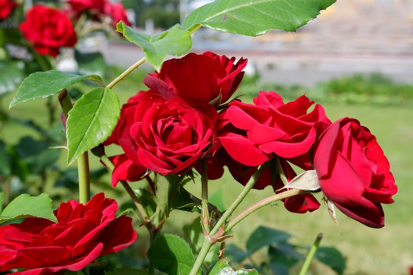

Keindahan bunga tidak hanya menyegarkan mata tetapi juga memiliki berbagai manfaat kesehatan, mulai dari meredakan stres hingga meningkatkan sistem imun
1. Bunga Mawar
Bunga mawar tidak hanya dikenal karena keindahan dan aromanya, tetapi juga manfaat kesehatannya yang luar biasa. Berbagai senyawa aktif dalam bunga ini membuatnya digunakan dalam pengobatan tradisional untuk mendukung kesehatan kulit, sistem kekebalan tubuh, hingga terapi untuk beberapa penyakit kronis.
Manfaat
- Meredakan nyeri haid.
- Menjaga kesehatan kulit.
- Mengatasi jerawat.
- Mencerahkan warna bibir.
- Mengatasi sakit tenggorokan.
- Meningkatkan sistem kekebalan tubuh.
- Mengatasi infeksi saluran kemih.
- Potensi terapi diabetes.
Penyakit yang Dapat Diatasi
- Terapi diabetes.
- Mengatasi jerawat.
- Masalah pencernaan.
Cara Pengolahan
-
Teh bunga mawar:
- Pilih kelopak mawar segar bebas pestisida.
- Cuci bersih, rebus air hingga mendidih, masukkan kelopak.
- Diamkan 5-10 menit, saring, tambahkan madu atau lemon sesuai selera.
-
Minyak esensial mawar:
- Rendam kelopak mawar dalam minyak zaitun.
- Simpan di tempat terpapar matahari selama beberapa minggu.
-
Sirup mawar:
- Rebus kelopak mawar dengan air dan gula hingga mengental.
- Gunakan sebagai pemanis alami atau bahan relaksasi.
2. Bunga Melati
Melati dikenal dengan aroma khasnya yang menenangkan. Selain menjadi bahan untuk teh dan parfum, bunga melati memiliki khasiat pengobatan untuk mengatasi gangguan pencernaan, penyakit kulit, hingga membantu penyembuhan penyakit serius seperti stroke dan hepatitis.
Manfaat
- Mengatasi sakit perut dan diare.
- Mengobati penyakit kulit.
- Mempercepat penyembuhan luka.
- Mencegah stroke.
- Mengurangi produksi ASI berlebih.
- Meringankan gejala sirosis dan hepatitis.
Penyakit yang Dapat Diatasi
- Diare.
- Penyakit kulit.
- Stroke.
- Sirosis.
- Hepatitis.
- Depresi.
Cara Pengolahan
-
Teh bunga melati:
- Cuci bersih segenggam bunga melati segar atau kering.
- Rebus air hingga mendidih, masukkan bunga melati.
- Diamkan 5-10 menit, saring, tambahkan madu sesuai selera.
3. Bunga Kembang Sepatu
Bunga kembang sepatu tidak hanya cantik sebagai tanaman hias, tetapi juga bermanfaat dalam dunia kesehatan. Kandungan alaminya membantu menurunkan tekanan darah, menjaga kesehatan hati, serta memiliki potensi sebagai pelengkap terapi kanker dan peradangan.
Manfaat
- Menurunkan tekanan darah.
- Memelihara kesehatan hati.
- Membantu menurunkan berat badan.
- Mengurangi risiko kanker.
- Memiliki sifat antibakteri.
- Menurunkan panas dalam.
Penyakit yang Dapat Diatasi
- Hipertensi.
- Peradangan.
- Siklus haid tidak teratur.
- Peluruh dahak.
Cara Pengolahan
-
Teh kembang sepatu:
- Gunakan 1-2 bunga kembang sepatu segar atau kering.
- Buang pangkal hijau dan putiknya, hanya gunakan mahkota bunga.
- Seduh dalam air panas 10-15 menit hingga air berwarna merah keunguan.
- Saring, tambahkan madu sesuai selera.
4. Bunga Lavender
Lavender sering digunakan dalam aromaterapi karena sifatnya yang menenangkan. Selain untuk relaksasi, bunga ini memiliki manfaat untuk meredakan kecemasan, stres, dan meningkatkan kualitas tidur, menjadikannya favorit dalam pengobatan herbal modern.
Manfaat
- Memberikan efek tenang.
- Meredakan kecemasan.
- Meningkatkan kualitas tidur.
Penyakit yang Dapat Diatasi
- Stres.
- Sakit kepala.
- Insomnia.
Cara Pengolahan
-
Teh lavender:
- Seduh 1-2 sdt bunga lavender kering dengan air panas.
- Diamkan 5-10 menit, saring, tambahkan madu jika diperlukan.
-
Minyak lavender:
- Rendam bunga lavender kering dalam minyak zaitun selama 2-3 minggu.
- Saring dan simpan di botol bersih.
-
Aromaterapi lavender:
- Teteskan minyak esensial lavender ke diffuser atau air hangat.
- Hirup uapnya untuk relaksasi.
5. Bunga Telang
Bunga telang dikenal sebagai pewarna alami yang kaya antioksidan. Selain itu, bunga ini digunakan dalam berbagai produk pangan dan pengobatan untuk menjaga kesehatan tubuh serta mengurangi risiko penyakit degeneratif.
Manfaat
- Pewarna alami.
- Sumber antioksidan.
- Digunakan dalam pembuatan minuman, es krim, sirup, roti, dan cookies.
- Membantu pencernaan.
Penyakit yang Dapat Diatasi
- Kanker.
- Penyakit kardiovaskular.
- Penyakit degeneratif.
Cara Pengolahan
-
Teh bunga telang:
- Seduh 5-7 kuntum bunga telang dalam air panas 5-10 menit.
- Tambahkan madu atau perasan jeruk nipis untuk mengubah warna menjadi ungu.
6. Bunga Rosella
Bunga rosella terkenal dengan rasa asam segarnya serta manfaatnya dalam menurunkan kadar kolesterol dan meningkatkan HDL. Teh rosella menjadi pilihan populer untuk membantu menjaga kesehatan jantung dan mencegah penyakit metabolik.
Manfaat
- Menurunkan kolesterol.
- Meningkatkan HDL.
- Menurunkan kadar trigliserida.
Penyakit yang Dapat Diatasi
- Dislipidemia.
- Hipertensi ringan hingga sedang.
Cara Pengolahan
-
Teh Rosella:
- Gunakan 5-7 kelopak bunga rosella segar atau kering.
- Seduh dalam air panas 5-10 menit hingga air berwarna merah tua.
- Tambahkan madu atau gula sesuai selera.
7. Bunga Kamboja
Bunga kamboja sering diasosiasikan dengan keindahan tropis, tetapi juga memiliki manfaat medis. Senyawa dalam bunga ini dapat membantu menghentikan batuk, mengurangi infeksi, dan memiliki potensi untuk mengatasi kanker paru-paru.
Manfaat
- Mencegah pertumbuhan bakteri.
Penyakit yang Dapat Diatasi
- Kanker paru-paru.
- Menghentikan batuk.
Cara Pengolahan
-
Teh Bunga Kamboja:
- Gunakan 5-7 kelopak bunga kamboja segar.
- Seduh dalam air panas 5-10 menit, tambahkan madu atau gula sesuai selera.
8. Bunga Kumis Kucing
Tanaman kumis kucing telah lama digunakan sebagai obat tradisional. Dengan sifat diuretik, antiradang, dan antijamur, tanaman ini sangat efektif untuk mengatasi gangguan ginjal, rematik, hingga alergi.
Manfaat
- Diuretik alami untuk melancarkan pengeluaran air seni.
- Mengatasi rematik, asam urat, batu ginjal, dan alergi.
- Memiliki sifat antijamur dan antiradang.
Penyakit yang Dapat Diatasi
- Rematik.
- Encok.
- Batu ginjal.
- Sembelit.
- Kencing manis.
- Albuminuria.
Cara Pengolahan
-
Teh kumis kucing:
- Rebus 5-10 lembar daun kumis kucing segar atau kering dalam 300 ml air selama 10-15 menit.
- Saring air rebusan, sajikan hangat atau dingin.